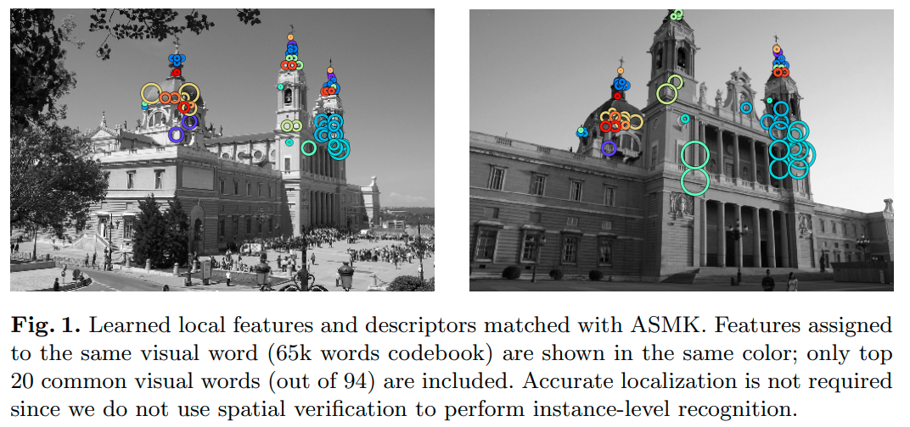
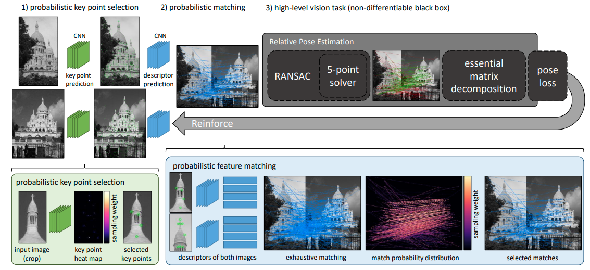

I would like to share some lessons I have learned about wide baseline stereo and propose some research directions, which are worth exploring in the short and longer term.
Lessons learned
1. Benchmark = metrics + implementation + dataset
In our paper “Image Matching across Wide Baselines: From Paper to Practice” we focused on the first two parts. Specifically, metrics – if they are not “downstream” metrics, the improvements in the single component might not translate to the overall system improvements. And implementation – implementing the simplest possible setup is, of course, a valuable tool, but one have to also incorporate the best known practices, e.g. matching, RANSAC tuning as so on.
I hope, that we have delivered that message to the community. But the last component – the dataset – we have, perhaps, overlooked a bit ourself. The problem with dataset limitations, e.g. lack of illumination or seasonal changes is not that one does not properly address. Usually benchmark papers are adressing their limitations quite clearly. The problem is that researchers (including myself) have tendency to work on improving results, which are easily measurable, therefore the implicitly designing the methods, which solve only some specific problem, encoded in the form of the dataset.
2. Trying to work for the “most general” case might be detrimental for the practical applications.
This is kind of opposite side of the lesson 1. For example, the classical SIFT matching is rotation-invariant, because that was assumed to be the requirement to work in the “real world”. However, the practice of image retrieval and then most of learned local features like R2D2, SuperPoint, DELF and so on, showed that “up-is-up” is a reasonable assumption to built on. The rotational invariance in lots of scenarios hurt more than helps.
3. When borrow idea from classical paper, adapt it
HardNet borrows the idea of the using second nearest neighbor(SNN) descriptor from the SIFT. However, using SNN ratio for descriptor learning leads to inferior results. We had to modify it to the triplet margin loss.
## 4. Classic handcrafted algorithms are not dead and can be improved a lot
Modern versions of RANSAC are still necessary for two view matching even when so complex methods as SuperGlue as used. Moreover, they still have quite a lot things for improvement, as proved by my colleague, Daniel Barath
They also have a benefit, that once you have an idea, you can make a paper out it faster, as you don’t need gathering data and training the model.
Future research directions
1. Application-specific local features
One thing about the current local features is that they are kind of universal. SIFT works reasonably well for lots of applications: 3d reconstruction, SLAM, image retrieval, etc. The learned features, like SuperPoint or R2D2, although are biased towards the data they are trained on, still don’t have anything domain specific.
Let me explain. There are different qualities about the local feature (detectors). It can be more or less robust to nuisance factors like the illumination and camera position. It can be more or less precisely localized. It can be more or less dense and/or evenly distributed over the image.
For example, in image retrieval, one does not really care about precise localization, the robustness is much more important. For the 3d reconstruction one would like to have a lot of 3d points to get the reasonable reconstruction. On the other hand, for the SLAM/relocalization application, sparse features would be more advantageous because of smaller memory footprint and computational cost.
There are, actually, some steps in that direction. Let me name a few.
HOW local features designed for the image retrieval 
SIPs: Succinct Interest Points from Unsupervised Inlierness Probability Learning sparse local features for the SLAM.
Reinforced Feature Points: Optimizing Feature Detection and Description for a High-Level Task 
I believe, that it is only beginning and we are yet to experience AlphaZero moment for the local features.
2. Rethinking overall wide baseline stereo pipeline, optimized for the specific application
It is often perceived, that image matching across the unordered collection of the images is a task with quadratic complexity w.r.t. number of images. Some operations can be done separately, e.g. feature detection, but others, like feature matching and RANSAC cannot. Right?
Not necessarily. It turns out, that one can avoid running feature matching and RANSAC for more than 90% of image pairs with clever preprocessing, ordering and re-using results from the previous matching. Moreover, in order to do the whole task faster (matching image collections), one may need to introduce additional steps, which are not necessary, or slowing things down for the two images case.
That’s what we done for the intial pose estimation for the global SfM in our paper, which reduced the matching runtime from 200 hours to 29.
Another example would be “SuperGlue: Learning Feature Matching with Graph Neural Networks”, where authors abandoned traditional descriptor matching and instead leveraged all the information for keypoint and descriptors from both images altogether.
3. Rethinking and improving the process of training data generation for the WBS
So far, all the local feature papers I have seen rely on one of the ground truth source.
- SfM data, obtained with COLMAP with, possibly, a cleaned depth information.
- Affine and color augmentation.
- Synthetic images (e.g. corners for SuperPoint).
There are several problems with them.
SfM data assumes that the data is matchable by the existing methods, at least for a some extent. That might not always be true for cross-seasonal, medical and other kind of data. It is also not applicable for historical photographies and other types of data. Moreover, SfM data takes quite a time for compute and space to store. I believe that we may do better.
Affine and color augmentation can take us only this far – we actually want our detectors and descriptors to be robust to the changes, which we don’t know how to simulate/augment.
Synthetic images as they are in, say, CARLA simulator lack fine details and photorealism. However, I am optimistic about using neural renderers and learned wide baseline stereo is a GAN-like self-improving loop.
4. Matching with On-Demand View Synthesis revisited
I like the “on-demand” principle a lot and I think we can explore it much more that we are now. So far we have either affine view synthesis (ASIFT, MODS), or GAN-based stylizations for the day-night matching.
That is why I am glad to see papers like Single-Image Depth Prediction Makes Feature Matching Easier, which generate normalized views based on depth in order to help the matching.
Why not go further? Combine viewpoint, illumination, season, sensor synthesis?
5. Moar inputs!
I have mentioned above that monocular depth may help the feature matching or camera pose estimation. However, why stop here?
Let’s use other networks as well, especially given that we will need them on robot or vehicle anyway. Semantic segmentation? Yes, please. Surface normals? Why not? Intrinsic images? Йой, най буде! {% fn 1 %}
{{ “Ukrainian, means let is be” | fndetail: 1 }}
What do you think would be good idea for the WBS research?
Let me know in comments/twitter. I am also going to update this page from time to time
Everything you (didn’t) want to know about image matching